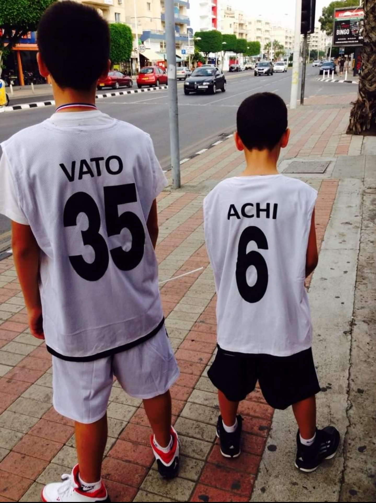

Languages I speak


Hello, dear visitors! My name is Archil Gogokhia, and I am a first-year student at ESSEC pursuing a Global Bachelor of Business Administration. Welcome to my page!
Check out my uni!Even though my name is Archil, I like to go by Achi. I am 19 years old. I am originally from Tbilisi, Georgia, but I have lived in other countries such as Cyprus and Hungary. I enjoy activities such as going to the movies, reading books, walking around and exploring different various neighborhoods of cities, and going to museums. Most of the time I am extroverted and I enjoy meeting and talking to many different people.
In order to tell more about myself without wasting too much time, here are few pictures of my favorite books, paintings, and other historical landmarks I have visited.


I also like to take part in sports activities. My favorite sport is Basketball. It was my brother(#35 in the picture) who introduced basketball to me, and I have loved it ever since
